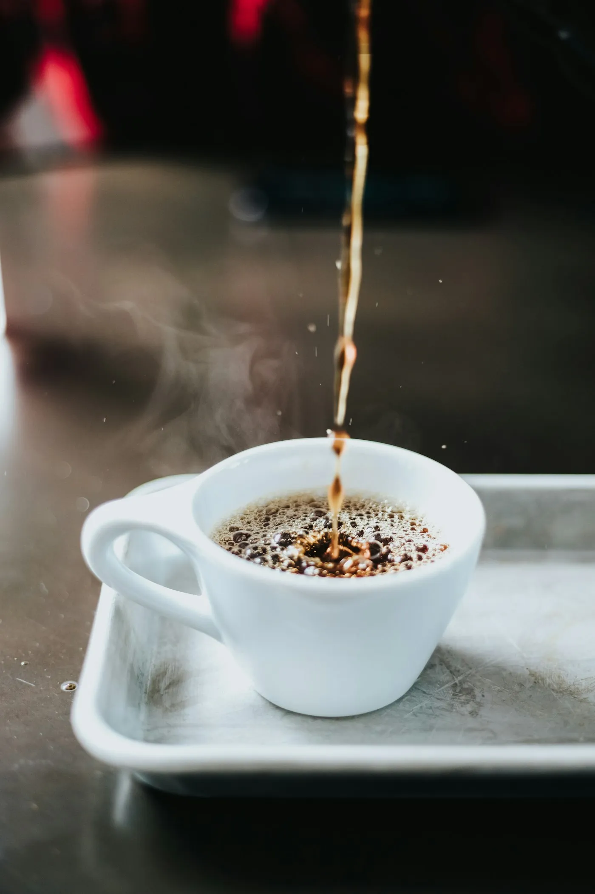
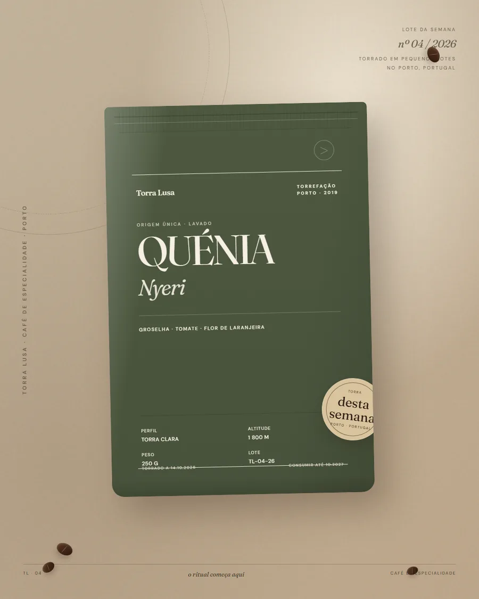
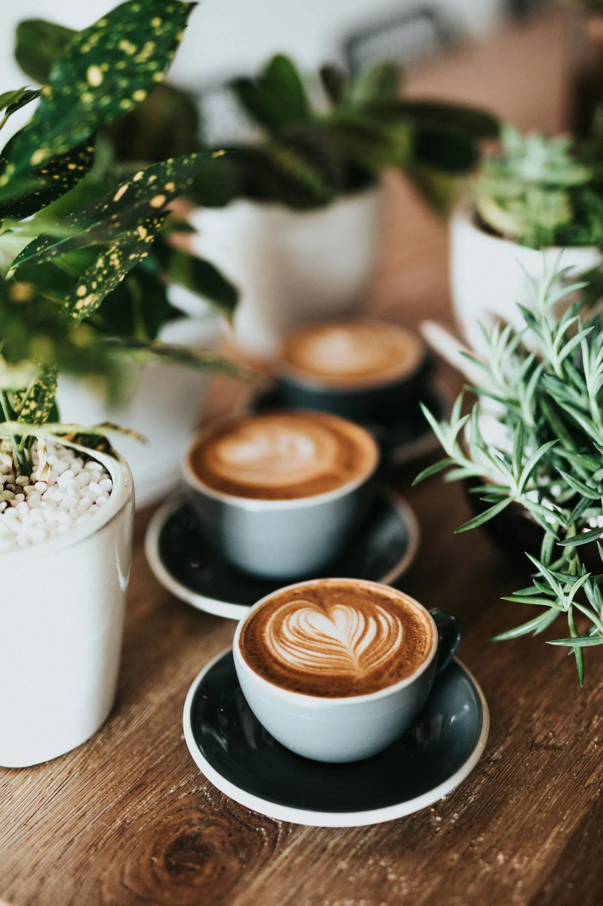
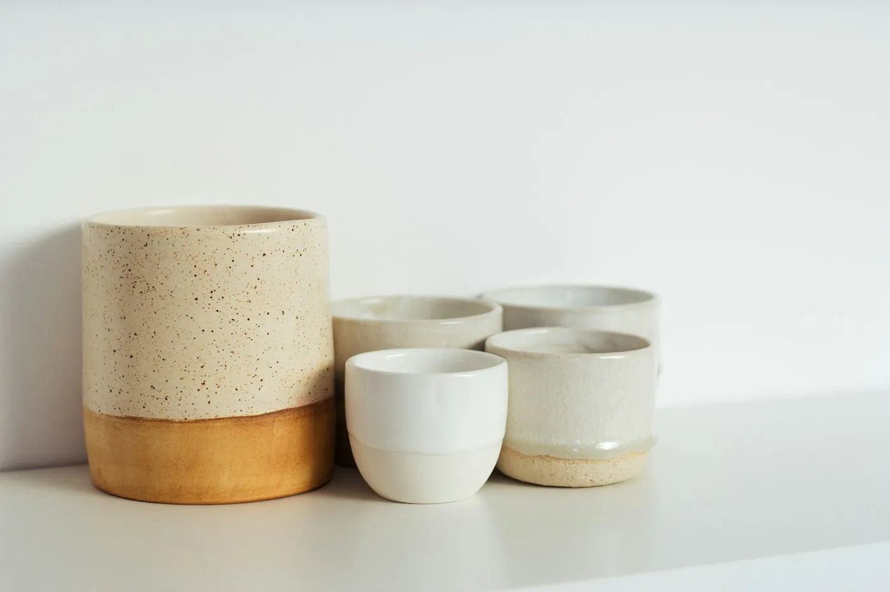
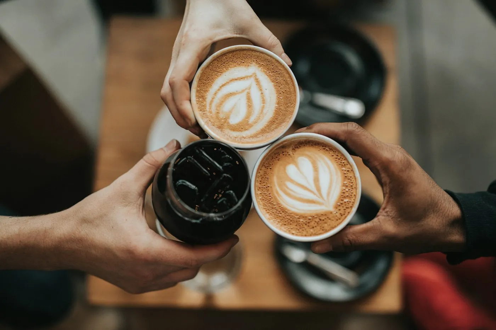

Lote 08 · Outono 2026 · Porto
O café é uma pausa.
Façamo-la bem.
Torramos pequenos lotes todas as semanas, escolhidos pela doçura e pela história de quem os cultiva. Sem pressa, sem atalhos — só uma chávena que merece ser repetida.

A torra desta semanaa caminho da tua chávena.

Acabou de chegar Quénia Nyeri Groselha negra · tomate · flor de laranjeiraOs favoritos de sempre.
Os cafés que mais saem do balcão. Todos com data de torra impressa e moagem à tua escolha.
Do grão à última gota.
Café para todos os dias, cápsulas para as manhãs rápidas e ferramentas que tornam o gesto mais bonito.

Café em grão & moído
Oito origens e blends. Escolhe a moagem para a tua máquina, V60, moka ou prensa.

Cápsulas
Compatíveis com Nespresso®. Alumínio reciclável.

Acessórios
V60, filtros, moinhos e chávenas.

Packs que contam uma história
Descoberta, presente ou o ritual V60 completo. Embalados à mão e sem preços à vista.
Encontra o café que combina contigo.
Não precisas de saber falar de notas de prova. Diz-nos como preparas o café e o que te sabe bem — nós fazemos as apresentações.
Prefiro explorar sozinhoUma sugestão para a tua chávena.
Três perguntas rápidas. Sem certo nem errado.
Café fresco, à porta, sem pensares nisso.
Escolhes o café, a moagem e a periodicidade. Nós torramos na semana do envio. Podes mudar, pausar ou cancelar quando quiseres — sem chamadas, sem letras pequenas.
Um café ou deixa a seleção connosco.
Torra programada para a semana do envio.
Pausa ou muda quando precisares.
Uma chávena certa, todos os meses.
Para quem gosta de acordar com uma surpresa boa: dois cafés escolhidos pela equipa, com uma nota de prova.
Uma vez, sem compromisso.
Em cada entrega, com torra programada.
Preços com IVA incluído. A primeira entrega segue na próxima torra; a data exata é confirmada por email.

Uma torrefação pequena com uma ideia simples.
Se o café é bom, não precisa de muitos adornos. Só de tempo, de gente curiosa e de uma torra honesta.
Começámos em 2019, numa loja estreita no Porto, com uma máquina de 5 kg e mais perguntas do que respostas. Hoje continuamos a torrar em pequenos lotes, a provar cada colheita e a escrever à mão o nome de quem a cultivou. O resto é conversa de balcão — a nossa parte preferida.
— Ana e Pedro, fundadores
Conhecer a torrefaçãoO melhor elogio é a segunda chávena.
Avaliações recolhidas após entrega. Sem filtros e sem incentivos.